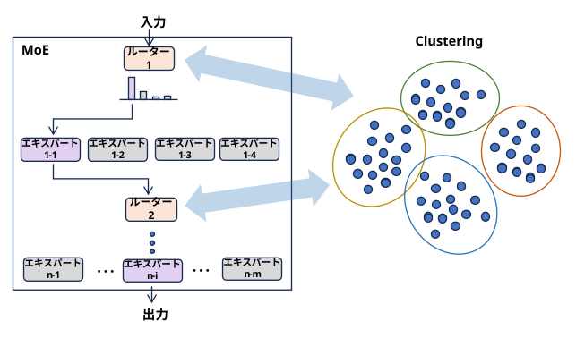

\[ \begin{array}{l} \text{MoE: グループで挑戦するクイズ番組に参加するグループ} \\ \text{エキスパート： グループのメンバー (得意な分野が異なる)} \\ \text{ルーター： 問題ごとに回答するメンバーを選ぶ人→ 問題をクラスタリングしている} \end{array} \]
「ルーター（ゲート）は、入力データの背後にある『クラスター中心（特徴）』を学習する役割を担っており、複雑な問題を個々のエキスパートが解決しやすいよう、クラスタリング（データ分割）問題として処理している」 というメカニズムを数学的に初めて証明した。
ルーティング時に「エキスパート自体をクラスタリング（グループ化）する」制約を加えることで、データの疎性を解消する手法（MoEC）を提案した。
ルーティングを完全に「クラスタリングの最適化問題」として再定式化し、入力空間を適応的に変換してトークンとエキスパートを高精度にマッチングする「ACルーター（Adaptive Clustering Router）」を提案している。